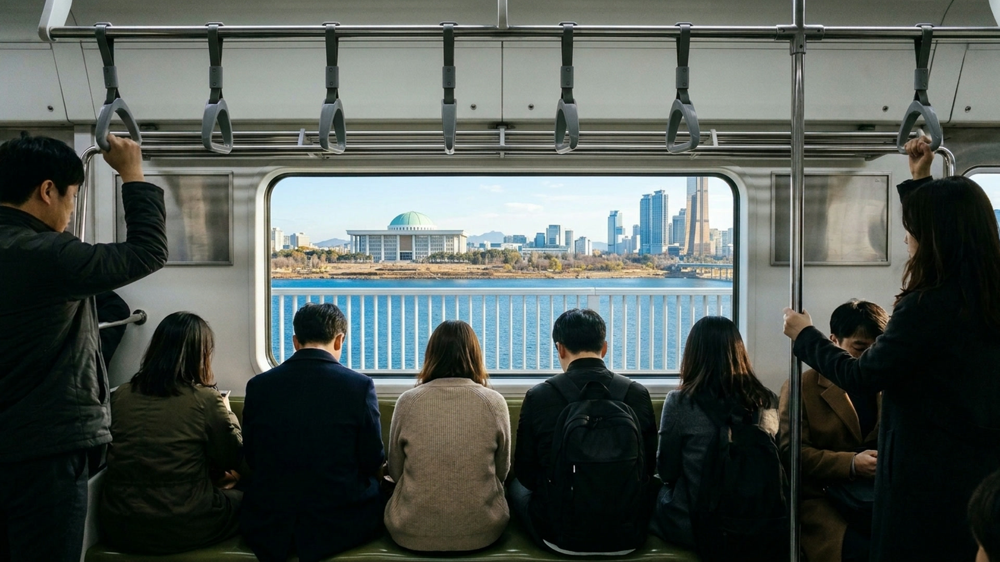
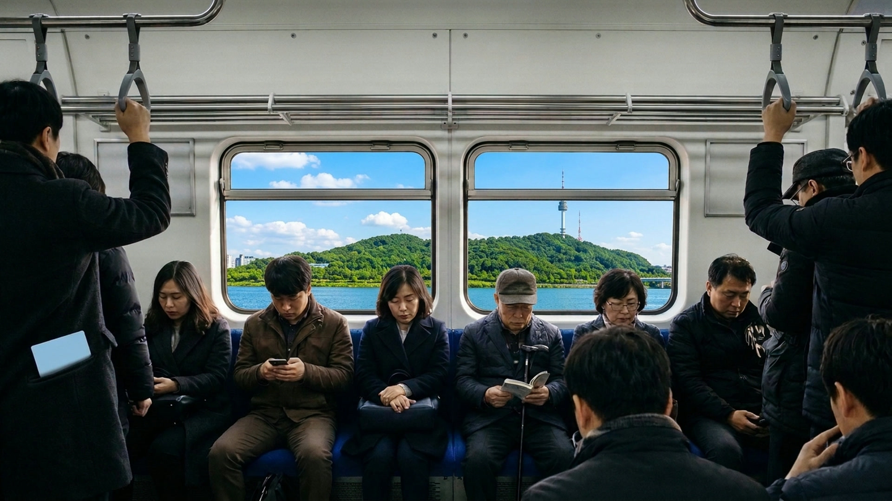
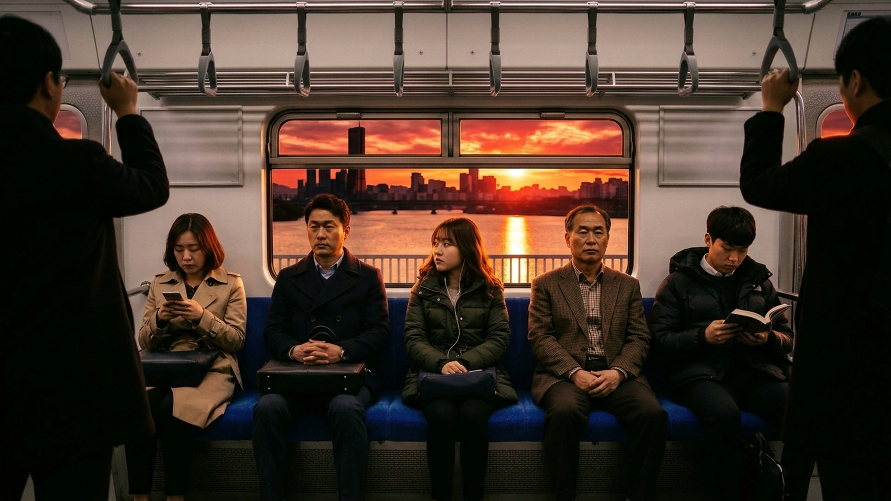

V.0.7.00 · 72.8점 본상 3대 정책 복원 마스터 (57.06초)
타겟: 국내 타지역 친구 · ① 전철·시내버스 통합환승 ➔ ② 대중교통 한강버스 ➔ ③ 안전한 한강 밤산책
만원 대중교통 평면 차창 (Cut 01~07) ➔ 창밖 오픈프레임 해방 (Cut 08~10)
『손안의 작은 화면에서 고개를 들면 — 이번 주말, 내 옆자리 비워둘게』
“사람들로 가득 찬 서울의 대중교통 속 평평한 차창은 거대한 전망대가 되고, 밤이 되면 유리창 프레임을 벗어나 그냥 걸어 들어가도 괜찮은 다정하고 안전한 도시 — 타지역·외국 친구에게 보내는 서울 초대장”
CUT 01
1막 · 작은 화면 속 일상
출근길 만원 지하철 · 작은 스마트폰에서 고개를 드는 순간
감정: calm
📐 Frame A · 도입 구도

파란 7인석 롱시트 만석 승객들이 모두 고개 숙여 작은 스마트폰만 보는 출근길 지하철
CUT 02
1막 · 거대한 차창 전망대
사람 가득한 2호선 당산철교 · 어깨 너머 열리는 한강 전망대
감정: curious
✨ Frame B · 풍경·해방 완성본 (클릭 시 1920×1080 원본)

승객들 어깨 위 평평한 통유리창과 철교 하단 난간 너머 탁 트인 푸른 한강·국회의사당·여의도
CUT 03
2막 · 정책 ① 기후동행 단기권
오천 원 기후동행 단기권 · 남산도 한강도 내 창가 자리
감정: happy
✨ Frame B · 풍경·해방 완성본 (클릭 시 1920×1080 원본)

사람들 사이 2연속 평면 전철 창문 가득 그림처럼 걸린 초록 남산서울타워와 푸른 한강
CUT 04
2막 · 정책 ①-2 시내버스 무료환승
시내버스 무료 환승 · 평평한 옆창에 흐르는 경복궁 단풍 돌담길
감정: happy
✨ Frame B · 풍경·해방 완성본 (클릭 시 1920×1080 원본)

나란히 앉은 승객들 바로 옆 창틀 가득 펼쳐지는 경복궁 기와지붕과 붉은 단풍·은행잎
CUT 05
2막 · 노을 환승 브릿지
퇴근길 만원 전철 다리 위 · 강물을 가르는 붉은 노을 빛기둥
감정: whisper
📐 Frame A · 도입 구도

퇴근길 입석·착석 승객 실루엣으로 가득 찬 전철 상단 개폐창 · 금빛 한강 철교 난간
✨ Frame B · 풍경·해방 완성본 (클릭 시 1920×1080 원본)

승객 실루엣 사이 평면 차창 가득 타오르는 63빌딩 노을 구름과 수직 황금 빛기둥
CUT 06
2막 · 정책 ② 삼천 원 한강버스
삼천 원 여의도 한강버스 · 물결 눈높이에서 마주하는 노을
감정: whisper
✨ Frame B · 풍경·해방 완성본 (클릭 시 1920×1080 원본)

천장 유리창까지 붉게 물들며 수면 눈높이 통창 가득 일렁이는 황금빛 한강 윤슬과 63빌딩
CUT 07
2막→3막 · 창밖으로 나갈 시간
야간 한강버스 선실 · 반포 달빛무지개분수와 밤의 초대
감정: calm
✨ Frame B · 풍경·해방 완성본 (클릭 시 1920×1080 원본)

물결 눈높이 차창 밖으로 화려하게 쏟아지는 반포 달빛무지개분수와 남산타워 야경
CUT 08
3막 · ★시점 이동 (프레임 해방!)
유리창 프레임을 넘어 · 탁 트인 서울의 밤공기 속으로 걸어 나오다
감정: curious
📐 Frame A · 도입 구도

한강 선착장 슬라이딩 유리문이 양옆으로 활짝 열리며 밤 산책로로 걸어 나가는 이지원
✨ Frame B · 풍경·해방 완성본 (클릭 시 1920×1080 원본)

창틀과 기둥이 100% 사라진 완전 개방형(Open Frame) 한강 수변 야경 데크를 걷는 이지원
CUT 09
3막 · 정책 ③ 동행 안심벨 & 안전한 밤
프레임 없어도 안전한 서울의 밤 · 강변 밤산책 문화와 핑크 해치 동행 안심벨
감정: happy

CUT 10
피날레 · 비워둔 내 옆자리
프레임 없는 한강 수변 벤치 · 친구를 위해 비워둔 옆자리와 불꽃축제
감정: happy
📐 Frame A · 도입 구도

기둥·프레임 가림 없는 탁 트인 한강 야경 벤치 왼쪽에 앉아 오른쪽 옆자리를 비워둔 이지원
✨ Frame B · 풍경·해방 완성본 (클릭 시 1920×1080 원본)

비워둔 오른쪽 벤치 옆자리 너머 한강 밤하늘 가득 화려한 오색 불꽃축제가 개화하며 반짝임